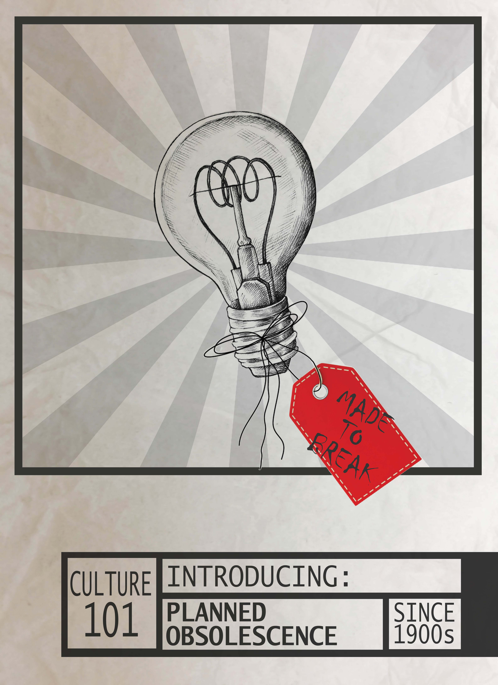
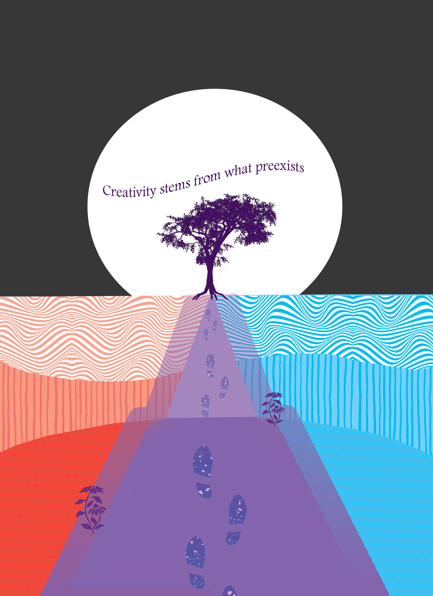
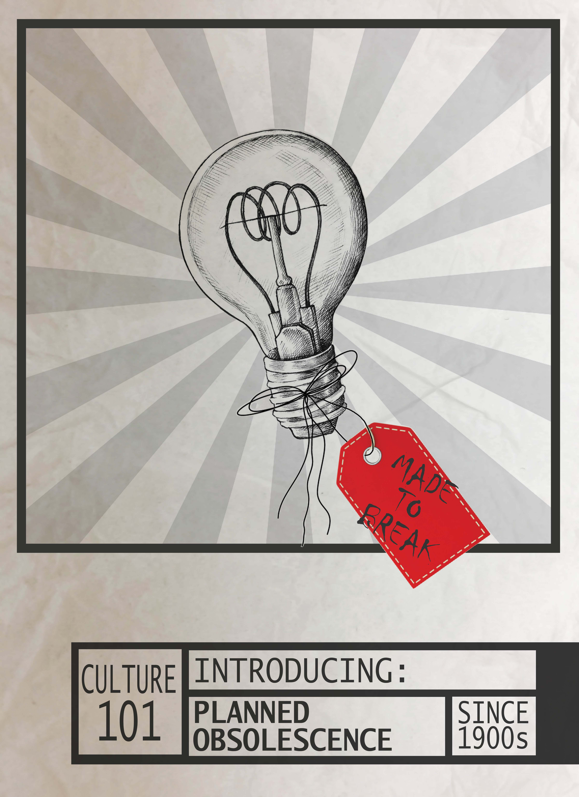
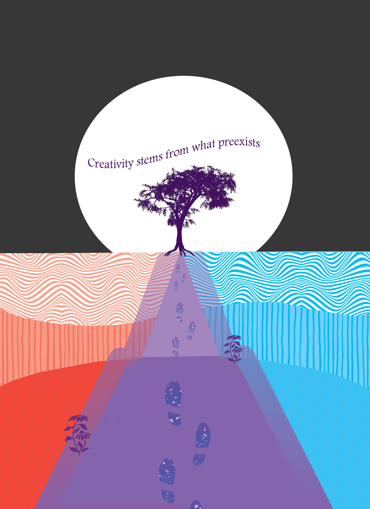
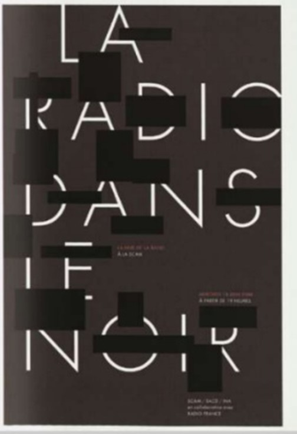
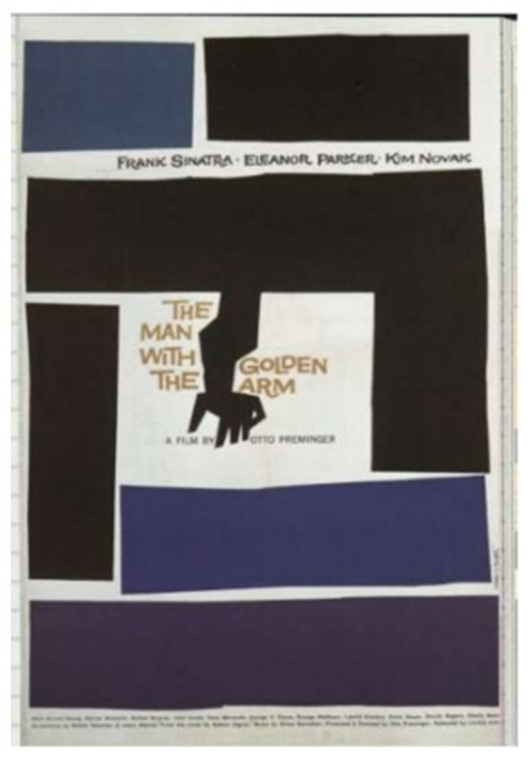
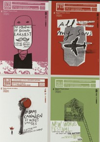
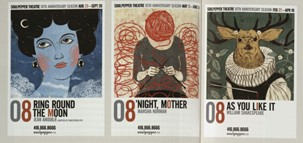
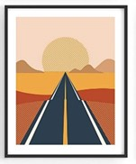

My Posters
Created using photoshop.
 



Artist Statements (abbreviated)
Design poster: For this poster, I was tasked to convey my definition of design. In addition, my poster had to draw inspiration from 2 posters and reflect the aesthetic techniques of those posters. When I think of design, I think of a favorite hobby of mine, which is card-making. My process of making a card is this: I start off with a simple notion, whip out my scissors, then start crafting away. I formulated my definition of design, “design turns the abstract into reality,” based off this process. The central image is a silhouette of my arm holding a pair of scissors. Overall, my hope was to convey my perspective that design can be a little fuzzy at times, but is bright and fun, and very hands-on.
Culture poster: The purpose of this poster was to shine light on the practice of planned obsolescence, which is a topic that weighs heavily in my heart. For this poster, I was aiming for a vintage aesthetic. Regarding color scheme, I kept it quite plain. I was originally going to make the poster monochrome, but when I added the tag which was originally red, I found that the juxtaposition of the rebellious red tag amongst the otherwise orderly and clean-cut poster draws attention to the central message. The phrase “made to break” is from the book by Giles Slade discussing technology and obsolescence in America.
Creativity poster: My creativity poster is inspired off of several concepts. I tried to depict the idea of the edge effect through the use of color; there is a red habitat and a blue habitat, and they meet at the center, forming a purple path. Along this purple path are flowers and the path ultimately leads to a tree. This symbolizes the development of ideas. The text I chose to put, “creativity stems from what preexists” is inspired off of the concept of stealing like an artist, an idea discussed by Austin Kleon. The footprints along the path and the gradient effect are supposed to represent desire paths, and reflect the idea of “walking as a mode of making.”
Inspiration Posters
Design poster references (from The Language of Graphic Design):
 Culture poster references (from The Language of Graphic Design):
 Creativity poster references:
